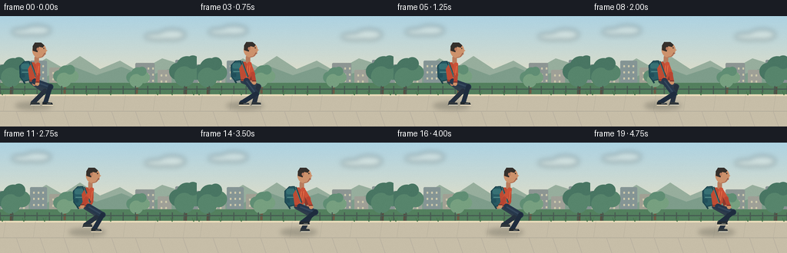
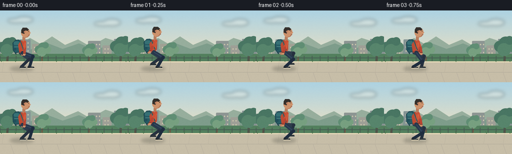

CODING AGENTS AS PIXEL WORLD MODELS
traex/GPT-5.6-Sol · motion_rationality_0032
点击播放 · 原生 RGB 像素
逐轮保存的候选
回放视频、检查图与代码变化。
每份候选均可单独播放。实际图片检查记录在下方工具轨迹中。
候选 01播放与检查图
点击播放 · 原生 RGB 像素


展开代码变化
--- 上一保存版本
+++ 本次保存版本
@@ -0,0 +1,258 @@
+from pathlib import Path
+import math
+import json
+import numpy as np
+from PIL import Image, ImageDraw, ImageFilter
+import artifact_io
+
+CASE_DIR = Path(__file__).resolve().parent
+SPEC = json.loads((CASE_DIR / "task_spec.json").read_text())
+W, H, N = SPEC["width"], SPEC["height"], SPEC["frames"]
+S = 4
+
+# High-resolution drawing helpers (supersampled for clean, illustrated edges).
+def sc(v): return int(round(v * S))
+def pts(seq): return [(sc(x), sc(y)) for x, y in seq]
+def ellipse(d, box, fill, outline=None, width=1):
+ d.ellipse(tuple(sc(v) for v in box), fill=fill, outline=outline, width=sc(width) if outline else 1)
+def polygon(d, p, fill): d.polygon(pts(p), fill=fill)
+def line(d, p, fill, width, joint="curve"):
+ d.line(pts(p), fill=fill, width=sc(width), joint=joint)
+def rr(d, box, radius, fill, outline=None, width=1):
+ d.rounded_rectangle(tuple(sc(v) for v in box), radius=sc(radius), fill=fill,
+ outline=outline, width=sc(width) if outline else 1)
+
+def capsule(d, a, b, width, color, end_color=None):
+ """A clean rounded limb segment."""
+ line(d, [a, b], color, width)
+ r = width / 2
+ ellipse(d, (a[0]-r, a[1]-r, a[0]+r, a[1]+r), color)
+ ellipse(d, (b[0]-r, b[1]-r, b[0]+r, b[1]+r), end_color or color)
+
+def ik_knee(hip, ankle, upper=22.0, lower=22.0):
+ """Two-link leg IK, selecting the naturally forward-bending knee."""
+ dx, dy = ankle[0]-hip[0], ankle[1]-hip[1]
+ dist = max(1e-5, math.hypot(dx, dy))
+ dist = min(dist, upper + lower - .2)
+ along = (upper*upper - lower*lower + dist*dist) / (2*dist)
+ h = math.sqrt(max(0.0, upper*upper - along*along))
+ ux, uy = dx/dist, dy/dist
+ base = (hip[0] + along*ux, hip[1] + along*uy)
+ # The + perpendicular solution puts a mostly vertical leg's knee toward travel (right).
+ k1 = (base[0] - uy*h, base[1] + ux*h)
+ k2 = (base[0] + uy*h, base[1] - ux*h)
+ return k1 if k1[0] >= k2[0] else k2
+
+def foot_pose(i, offset, root_x, ground=116):
+ # Each foot is planted through 62% of its cycle, then follows a smooth lifted swing.
+ stride = 32.0
+ s = (i / 5.0 + offset) % 1.0
+ front = 15.5
+ stance = 0.62
+ if s < stance:
+ relx = front - stride*s
+ lift = 0.0
+ toe = 0.8 * max(0.0, (s - .48) / (stance - .48))
+ else:
+ u = (s-stance)/(1-stance)
+ smooth = u*u*(3-2*u)
+ relx = front - stride*stance + (stride*stance)*smooth
+ lift = 8.7 * math.sin(math.pi*u)
+ toe = -1.2*math.sin(math.pi*u)
+ return (root_x + relx, ground - 3.3 - lift), toe, s
+
+def draw_tree(d, x, base, scale=1.0, dark=False):
+ trunk = (111, 91, 70) if not dark else (86, 79, 67)
+ line(d, [(x, base), (x+.6, base-25*scale)], trunk, 4.2*scale)
+ line(d, [(x, base-16*scale), (x-8*scale, base-25*scale)], trunk, 2.0*scale)
+ line(d, [(x, base-18*scale), (x+8*scale, base-29*scale)], trunk, 1.8*scale)
+ leaf = (96, 142, 116) if not dark else (73, 118, 99)
+ leaf2 = (119, 160, 128) if not dark else (87, 133, 108)
+ for ox, oy, r, c in [(-9,-29,10,leaf), (2,-34,13,leaf), (13,-29,10,leaf2),
+ (-1,-23,12,leaf2), (9,-40,8,leaf)]:
+ ellipse(d, (x+(ox-r)*scale, base+(oy-r)*scale,
+ x+(ox+r)*scale, base+(oy+r)*scale), c)
+
+def background(frame_index):
+ h, w = H*S, W*S
+ yy = np.linspace(0, 1, h)[:, None]
+ sky_top = np.array([174, 211, 226.], dtype=float)
+ sky_bottom = np.array([242, 226, 191.], dtype=float)
+ blend = np.minimum(1, yy/0.72) ** 1.1
+ arr = np.empty((h,w,3), dtype=np.uint8)
+ grad = sky_top[None,None,:]*(1-blend[:,:,None]) + sky_bottom[None,None,:]*blend[:,:,None]
+ arr[:] = np.repeat(grad, w, axis=1).astype(np.uint8)
+ im = Image.fromarray(arr, 'RGB')
+ d = ImageDraw.Draw(im)
+
+ # Soft clouds and atmospheric city silhouettes establish depth.
+ cloud = Image.new('RGBA', im.size, (0,0,0,0)); cd = ImageDraw.Draw(cloud)
+ for box in [(15,16,49,25),(31,12,66,25),(188,22,226,31),(207,17,241,31)]:
+ cd.ellipse(tuple(sc(v) for v in box), fill=(255,250,235,82))
+ cloud = cloud.filter(ImageFilter.GaussianBlur(sc(3.5)))
+ im = Image.alpha_composite(im.convert('RGBA'), cloud).convert('RGB'); d = ImageDraw.Draw(im)
+
+ # Distant hills.
+ polygon(d, [(-5,76),(15,62),(35,70),(60,55),(81,67),(104,52),(130,69),
+ (156,58),(180,72),(211,55),(264,72),(264,96),(-5,96)], (151,174,157))
+ polygon(d, [(-5,82),(30,70),(60,79),(91,64),(125,77),(158,66),(190,79),
+ (225,67),(264,78),(264,99),(-5,99)], (126,157,139))
+
+ # Muted skyline behind the park.
+ for x,y,bw,bh,c in [(-2,63,21,33,(139,151,148)),(20,70,17,26,(157,163,154)),
+ (39,58,22,38,(133,149,149)),(64,67,16,29,(161,161,148)),
+ (176,61,25,35,(141,150,147)),(205,70,18,26,(159,160,151)),
+ (228,57,30,39,(135,147,147))]:
+ rr(d,(x,y,x+bw,y+bh),1.5,c)
+ for wx in np.arange(x+4,x+bw-2,6):
+ for wy in np.arange(y+6,y+bh-3,8):
+ rr(d,(wx,wy,wx+2,wy+2.5),.3,(205,201,172))
+
+ # Park verge, trees, and low fence.
+ polygon(d,[(-2,87),(258,87),(258,110),(-2,110)],(83,128,94))
+ draw_tree(d, 15, 104, 1.05, True)
+ draw_tree(d, 241, 104, 1.10, True)
+ draw_tree(d, 84, 101, .78, False)
+ draw_tree(d, 178, 101, .73, False)
+ line(d,[(-2,95),(258,95)],(69,91,82),1.4)
+ for x in range(0,265,16):
+ line(d,[(x,91),(x,103)],(72,91,81),1.5)
+
+ # Paved walking path with perspective and edge details.
+ polygon(d,[(-2,102),(258,102),(258,145),(-2,145)],(199,190,168))
+ line(d,[(-2,103),(258,103)],(235,221,187),2.2)
+ line(d,[(-2,124),(258,124)],(176,169,153),.7)
+ # staggered paving seams
+ for x in range(-10,270,31):
+ line(d,[(x,124),(x+7,144)],(181,174,158),.65)
+ for x in range(7,270,39):
+ line(d,[(x,103),(x-3,124)],(184,176,157),.55)
+ # tiny verge tufts
+ for x in [3,31,58,113,144,205,224,252]:
+ line(d,[(x,103),(x-2,98)],(72,116,78),1)
+ line(d,[(x,103),(x+2,97)],(78,123,82),1)
+ return im
+
+def draw_person(base, i):
+ im = base.convert('RGBA')
+ d = ImageDraw.Draw(im)
+ root_x = 43.5 + 6.35*i
+ gait = 2*math.pi*(i/5.0)
+ bob = 1.0*math.cos(2*gait) # two subtle vertical beats per stride
+ hip_y = 84.2 + bob
+ shoulder = (root_x+2.8, 61.0+bob)
+ hip = (root_x, hip_y)
+
+ # Contact shadow reacts to the gait but remains grounded.
+ shadow = Image.new('RGBA', im.size, (0,0,0,0)); sd = ImageDraw.Draw(shadow)
+ sd.ellipse((sc(root_x-24),sc(112),sc(root_x+24),sc(121.5)), fill=(48,54,48,65))
+ shadow = shadow.filter(ImageFilter.GaussianBlur(sc(3.0)))
+ im = Image.alpha_composite(im, shadow); d = ImageDraw.Draw(im)
+
+ # Foot targets from a physically legible plant/swing cycle.
+ far_ankle, far_toe, far_s = foot_pose(i, .5, root_x)
+ near_ankle, near_toe, near_s = foot_pose(i, 0.0, root_x)
+ far_hip = (root_x-2.2, hip_y)
+ near_hip = (root_x+2.0, hip_y)
+ far_knee = ik_knee(far_hip, far_ankle, 21.0, 21.5)
+ near_knee = ik_knee(near_hip, near_ankle, 21.0, 21.5)
+
+ # Far leg and shoe, subdued by depth.
+ capsule(d, far_hip, far_knee, 7.2, (47,61,76))
+ capsule(d, far_knee, far_ankle, 6.0, (38,49,63))
+ # shoe points in direction of travel; swinging foot angles slightly down/up.
+ fy = far_ankle[1]
+ polygon(d, [(far_ankle[0]-3,fy-1),(far_ankle[0]+8,fy+far_toe),
+ (far_ankle[0]+9,fy+3),(far_ankle[0]-4,fy+3)], (48,55,59))
+ line(d,[(far_ankle[0]-3,fy+3),(far_ankle[0]+9,fy+3)],(224,218,197),1.1)
+
+ # Far arm counter-swings with near leg.
+ armang = .54*math.sin(gait + math.pi)
+ fs = (shoulder[0]-1.7, shoulder[1]+1.0)
+ fe = (fs[0] + 13*math.sin(armang), fs[1] + 13*math.cos(armang))
+ fh = (fe[0] + 12*math.sin(armang*.75), fe[1] + 12*math.cos(armang*.75))
+ capsule(d, fs, fe, 5.3, (155,67,49))
+ capsule(d, fe, fh, 4.7, (137,58,46))
+ ellipse(d,(fh[0]-2.5,fh[1]-2.5,fh[0]+2.5,fh[1]+2.8),(188,130,100))
+
+ # Backpack sits behind the torso, with volume, flap, seams, and attachment straps.
+ pack = [(root_x-5.5,58+bob),(root_x-12.5,58.5+bob),(root_x-18.0,64+bob),
+ (root_x-17.6,78+bob),(root_x-13.0,84+bob),(root_x-4.8,82+bob),
+ (root_x-2.7,67+bob)]
+ polygon(d, pack, (40,91,100))
+ line(d, pack+[pack[0]], (28,68,78), 1.4)
+ rr(d,(root_x-16,61+bob,root_x-5,68+bob),2.2,(55,113,117))
+ line(d,[(root_x-15,72+bob),(root_x-5,72+bob)],(83,139,137),1.2)
+ rr(d,(root_x-17.2,74+bob,root_x-11.3,79+bob),1.5,(33,79,90))
+ line(d,[(root_x-13,84+bob),(root_x-11,87+bob)],(28,65,73),2.2)
+
+ # Torso: warm jacket gives clear silhouette against the teal environment.
+ torso = [(shoulder[0]-4.7, shoulder[1]-2),(shoulder[0]+5.5,shoulder[1]-1),
+ (root_x+8.0,78+bob),(root_x+4.2,85+bob),(root_x-5.0,84+bob),
+ (root_x-7.2,68+bob)]
+ polygon(d,torso,(190,76,52))
+ line(d,[(shoulder[0]+1,61+bob),(root_x+2.2,83+bob)],(225,111,69),1.15)
+ line(d,[(root_x-5,82.5+bob),(root_x+5,83.2+bob)],(113,52,44),1.2)
+ # Backpack's front strap visibly crosses shoulder and chest.
+ line(d,[(root_x-4,58.5+bob),(root_x+3.6,79+bob)],(29,69,76),2.0)
+ line(d,[(root_x-4.3,59+bob),(root_x+3.2,78.5+bob)],(89,140,138),.7)
+
+ # Near leg on top for readable alternating gait.
+ capsule(d, near_hip, near_knee, 7.8, (39,56,76))
+ # trouser highlight along moving thigh
+ line(d,[near_hip,near_knee],(53,73,94),2.0)
+ capsule(d, near_knee, near_ankle, 6.2, (31,45,63))
+ nx, ny = near_ankle
+ polygon(d,[(nx-3.7,ny-1),(nx+8.5,ny+near_toe),(nx+10,ny+3.2),(nx-4,ny+3.2)],(35,42,47))
+ line(d,[(nx-4,ny+3.2),(nx+10,ny+3.2)],(240,225,194),1.2)
+ line(d,[(nx+2,ny+1.5),(nx+7,ny+1.1)],(168,174,169),.7)
+
+ # Neck and side-profile head facing right.
+ rr(d,(root_x+1.3,51+bob,root_x+7.0,61.5+bob),2.3,(186,125,94))
+ # head + nose/chin profile
+ ellipse(d,(root_x-1.5,34+bob,root_x+16.5,53.5+bob),(205,146,108))
+ polygon(d,[(root_x+14.0,41+bob),(root_x+18.2,44+bob),(root_x+14.2,46+bob)],(205,146,108))
+ # chin contour
+ line(d,[(root_x+14.8,47+bob),(root_x+11.5,52+bob),(root_x+6.5,53.2+bob)],(157,96,76),.8)
+ # hair/cap-like natural hair mass
+ polygon(d,[(root_x-1,44+bob),(root_x-1,38+bob),(root_x+2,33.2+bob),
+ (root_x+10,33.5+bob),(root_x+14,37+bob),(root_x+12,40+bob),
+ (root_x+7,38.7+bob),(root_x+5,46+bob)],(53,48,44))
+ ellipse(d,(root_x+4,40+bob,root_x+7.2,44+bob),(189,126,97))
+ ellipse(d,(root_x+12.7,40.4+bob,root_x+14.1,41.8+bob),(43,42,39))
+ line(d,[(root_x+14,48.4+bob),(root_x+16,48.2+bob)],(117,67,60),.7)
+
+ # Near arm overlays torso and swings opposite near leg.
+ nang = .58*math.sin(gait + math.pi)
+ ns = (shoulder[0]+3.0, shoulder[1]+1.3)
+ ne = (ns[0] + 13.2*math.sin(nang), ns[1] + 13.2*math.cos(nang))
+ # gentle elbow bend changes with stride
+ fore = nang*.72 - .08
+ nh = (ne[0] + 11.5*math.sin(fore), ne[1] + 11.5*math.cos(fore))
+ capsule(d,ns,ne,5.8,(204,82,55))
+ capsule(d,ne,nh,5.0,(185,69,50))
+ ellipse(d,(nh[0]-2.6,nh[1]-2.4,nh[0]+2.7,nh[1]+2.9),(207,145,105))
+ # jacket cuff
+ line(d,[(nh[0]-2.7,nh[1]-2),(nh[0]+2.4,nh[1]-2)],(112,50,43),1.3)
+
+ # A few soft highlights unify the character lighting.
+ line(d,[(shoulder[0]+4,64+bob),(root_x+5,76+bob)],(233,119,76),.8)
+ return im.convert('RGB')
+
+def make_frames():
+ frames=[]
+ for i in range(N):
+ image = draw_person(background(i), i)
+ image = image.resize((W,H), Image.Resampling.LANCZOS)
+ # restrained film grain prevents sterile flat fills while preserving RGB clarity
+ a = np.array(image, dtype=np.int16)
+ rng = np.random.default_rng(9100+i)
+ grain = rng.normal(0, .55, a.shape[:2])[:,:,None]
+ a = np.clip(a + grain, 0, 255).astype(np.uint8)
+ frames.append(a)
+ return np.stack(frames)
+
+if __name__ == "__main__":
+ frames = make_frames()
+ artifact_io.save(frames, CASE_DIR)
+ print(f"saved {len(frames)} RGB frames at {W}x{H}")
可观测工具轨迹
实际执行的命令与返回图片。
命令 1exit 0
/bin/bash -lc "cat prompt.txt && printf '\\n--- RULES ---\\n' && cat GENERATION_RULES.md && printf '\\n--- SPEC ---\\n' && cat task_spec.json"
命令 2exit 0
/bin/bash -lc "find . -maxdepth 2 -type f -printf '%p\\n' | sort && printf '\\nTools:\\n' && command -v ffmpeg || true && command -v python3 || true"
命令 3exit 0
/bin/bash -lc 'cat artifact_io.py'
命令 4exit 0
/bin/bash -lc "cat > generate.py <<'PY'
from pathlib import Path
import math
import json
import numpy as np
from PIL import Image, ImageDraw, ImageFilter
import artifact_io
CASE_DIR = Path(__file__).resolve().parent
SPEC = json.loads((CASE_DIR / \"task_spec.json\").read_text())
W, H, N = SPEC[\"width\"], SPEC[\"height\"], SPEC[\"frames\"]
S = 4
# High-resolution drawing helpers (supersampled for clean, illustrated edges).
def sc(v): return int(round(v * S))
def pts(seq): return [(sc(x), sc(y)) for x, y in seq]
def ellipse(d, box, fill, outline=None, width=1):
d.ellipse(tuple(sc(v) for v in box), fill=fill, outline=outline, width=sc(width) if outline else 1)
def polygon(d, p, fill): d.polygon(pts(p), fill=fill)
def line(d, p, fill, width, joint=\"curve\"):
d.line(pts(p), fill=fill, width=sc(width), joint=joint)
def rr(d, box, radius, fill, outline=None, width=1):
d.rounded_rectangle(tuple(sc(v) for v in box), radius=sc(radius), fill=fill,
outline=outline, width=sc(width) if outline else 1)
def capsule(d, a, b, width, color, end_color=None):
\"\"\"A clean rounded limb segment.\"\"\"
line(d, [a, b], color, width)
r = width / 2
ellipse(d, (a[0]-r, a[1]-r, a[0]+r, a[1]+r), color)
ellipse(d, (b[0]-r, b[1]-r, b[0]+r, b[1]+r), end_color or color)
def ik_knee(hip, ankle, upper=22.0, lower=22.0):
\"\"\"Two-link leg IK, selecting the naturally forward-bending knee.\"\"\"
dx, dy = ankle[0]-hip[0], ankle[1]-hip[1]
dist = max(1e-5, math.hypot(dx, dy))
dist = min(dist, upper + lower - .2)
along = (upper*upper - lower*lower + dist*dist) / (2*dist)
h = math.sqrt(max(0.0, upper*upper - along*along))
ux, uy = dx/dist, dy/dist
base = (hip[0] + along*ux, hip[1] + along*uy)
# The + perpendicular solution puts a mostly vertical leg's knee toward travel (right).
k1 = (base[0] - uy*h, base[1] + ux*h)
k2 = (base[0] + uy*h, base[1] - ux*h)
return k1 if k1[0] >= k2[0] else k2
def foot_pose(i, offset, root_x, ground=116):
# Each foot is planted through 62% of its cycle, then follows a smooth lifted swing.
stride = 32.0
s = (i / 5.0 + offset) % 1.0
front = 15.5
stance = 0.62
if s < stance:
relx = front - stride*s
lift = 0.0
toe = 0.8 * max(0.0, (s - .48) / (stance - .48))
else:
u = (s-stance)/(1-stance)
smooth = u*u*(3-2*u)
relx = front - stride*stance + (stride*stance)*smooth
lift = 8.7 * math.sin(math.pi*u)
toe = -1.2*math.sin(math.pi*u)
return (root_x + relx, ground - 3.3 - lift), toe, s
def draw_tree(d, x, base, scale=1.0, dark=False):
trunk = (111, 91, 70) if not dark else (86, 79, 67)
line(d, [(x, base), (x+.6, base-25*scale)], trunk, 4.2*scale)
line(d, [(x, base-16*scale), (x-8*scale, base-25*scale)], trunk, 2.0*scale)
line(d, [(x, base-18*scale), (x+8*scale, base-29*scale)], trunk, 1.8*scale)
leaf = (96, 142, 116) if not dark else (73, 118, 99)
leaf2 = (119, 160, 128) if not dark else (87, 133, 108)
for ox, oy, r, c in [(-9,-29,10,leaf), (2,-34,13,leaf), (13,-29,10,leaf2),
(-1,-23,12,leaf2), (9,-40,8,leaf)]:
ellipse(d, (x+(ox-r)*scale, base+(oy-r)*scale,
x+(ox+r)*scale, base+(oy+r)*scale), c)
def background(frame_index):
h, w = H*S, W*S
yy = np.linspace(0, 1, h)[:, None]
sky_top = np.array([174, 211, 226.], dtype=float)
sky_bottom = np.array([242, 226, 191.], dtype=float)
blend = np.minimum(1, yy/0.72) ** 1.1
arr = np.empty((h,w,3), dtype=np.uint8)
grad = sky_top[None,None,:]*(1-blend[:,:,None]) + sky_bottom[None,None,:]*blend[:,:,None]
arr[:] = np.repeat(grad, w, axis=1).astype(np.uint8)
im = Image.fromarray(arr, 'RGB')
d = ImageDraw.Draw(im)
# Soft clouds and atmospheric city silhouettes establish depth.
cloud = Image.new('RGBA', im.size, (0,0,0,0)); cd = ImageDraw.Draw(cloud)
for box in [(15,16,49,25),(31,12,66,25),(188,22,226,31),(207,17,241,31)]:
cd.ellipse(tuple(sc(v) for v in box), fill=(255,250,235,82))
cloud = cloud.filter(ImageFilter.GaussianBlur(sc(3.5)))
im = Image.alpha_composite(im.convert('RGBA'), cloud).convert('RGB'); d = ImageDraw.Draw(im)
# Distant hills.
polygon(d, [(-5,76),(15,62),(35,70),(60,55),(81,67),(104,52),(130,69),
(156,58),(180,72),(211,55),(264,72),(264,96),(-5,96)], (151,174,157))
polygon(d, [(-5,82),(30,70),(60,79),(91,64),(125,77),(158,66),(190,79),
(225,67),(264,78),(264,99),(-5,99)], (126,157,139))
# Muted skyline behind the park.
for x,y,bw,bh,c in [(-2,63,21,33,(139,151,148)),(20,70,17,26,(157,163,154)),
(39,58,22,38,(133,149,149)),(64,67,16,29,(161,161,148)),
(176,61,25,35,(141,150,147)),(205,70,18,26,(159,160,151)),
(228,57,30,39,(135,147,147))]:
rr(d,(x,y,x+bw,y+bh),1.5,c)
for wx in np.arange(x+4,x+bw-2,6):
for wy in np.arange(y+6,y+bh-3,8):
rr(d,(wx,wy,wx+2,wy+2.5),.3,(205,201,172))
# Park verge, trees, and low fence.
polygon(d,[(-2,87),(258,87),(258,110),(-2,110)],(83,128,94))
draw_tree(d, 15, 104, 1.05, True)
draw_tree(d, 241, 104, 1.10, True)
draw_tree(d, 84, 101, .78, False)
draw_tree(d, 178, 101, .73, False)
line(d,[(-2,95),(258,95)],(69,91,82),1.4)
for x in range(0,265,16):
line(d,[(x,91),(x,103)],(72,91,81),1.5)
# Paved walking path with perspective and edge details.
polygon(d,[(-2,102),(258,102),(258,145),(-2,145)],(199,190,168))
line(d,[(-2,103),(258,103)],(235,221,187),2.2)
line(d,[(-2,124),(258,124)],(176,169,153),.7)
# staggered paving seams
for x in range(-10,270,31):
line(d,[(x,124),(x+7,144)],(181,174,158),.65)
for x in range(7,270,39):
line(d,[(x,103),(x-3,124)],(184,176,157),.55)
# tiny verge tufts
for x in [3,31,58,113,144,205,224,252]:
line(d,[(x,103),(x-2,98)],(72,116,78),1)
line(d,[(x,103),(x+2,97)],(78,123,82),1)
return im
def draw_person(base, i):
im = base.convert('RGBA')
d = ImageDraw.Draw(im)
root_x = 43.5 + 6.35*i
gait = 2*math.pi*(i/5.0)
bob = 1.0*math.cos(2*gait) # two subtle vertical beats per stride
hip_y = 84.2 + bob
shoulder = (root_x+2.8, 61.0+bob)
hip = (root_x, hip_y)
# Contact shadow reacts to the gait but remains grounded.
shadow = Image.new('RGBA', im.size, (0,0,0,0)); sd = ImageDraw.Draw(shadow)
sd.ellipse((sc(root_x-24),sc(112),sc(root_x+24),sc(121.5)), fill=(48,54,48,65))
shadow = shadow.filter(ImageFilter.GaussianBlur(sc(3.0)))
im = Image.alpha_composite(im, shadow); d = ImageDraw.Draw(im)
# Foot targets from a physically legible plant/swing cycle.
far_ankle, far_toe, far_s = foot_pose(i, .5, root_x)
near_ankle, near_toe, near_s = foot_pose(i, 0.0, root_x)
far_hip = (root_x-2.2, hip_y)
near_hip = (root_x+2.0, hip_y)
far_knee = ik_knee(far_hip, far_ankle, 21.0, 21.5)
near_knee = ik_knee(near_hip, near_ankle, 21.0, 21.5)
# Far leg and shoe, subdued by depth.
capsule(d, far_hip, far_knee, 7.2, (47,61,76))
capsule(d, far_knee, far_ankle, 6.0, (38,49,63))
# shoe points in direction of travel; swinging foot angles slightly down/up.
fy = far_ankle[1]
polygon(d, [(far_ankle[0]-3,fy-1),(far_ankle[0]+8,fy+far_toe),
(far_ankle[0]+9,fy+3),(far_ankle[0]-4,fy+3)], (48,55,59))
line(d,[(far_ankle[0]-3,fy+3),(far_ankle[0]+9,fy+3)],(224,218,197),1.1)
# Far arm counter-swings with near leg.
armang = .54*math.sin(gait + math.pi)
fs = (shoulder[0]-1.7, shoulder[1]+1.0)
fe = (fs[0] + 13*math.sin(armang), fs[1] + 13*math.cos(armang))
fh = (fe[0] + 12*math.sin(armang*.75), fe[1] + 12*math.cos(armang*.75))
capsule(d, fs, fe, 5.3, (155,67,49))
capsule(d, fe, fh, 4.7, (137,58,46))
ellipse(d,(fh[0]-2.5,fh[1]-2.5,fh[0]+2.5,fh[1]+2.8),(188,130,100))
# Backpack sits behind the torso, with volume, flap, seams, and attachment straps.
pack = [(root_x-5.5,58+bob),(root_x-12.5,58.5+bob),(root_x-18.0,64+bob),
(root_x-17.6,78+bob),(root_x-13.0,84+bob),(root_x-4.8,82+bob),
(root_x-2.7,67+bob)]
polygon(d, pack, (40,91,100))
line(d, pack+[pack[0]], (28,68,78), 1.4)
rr(d,(root_x-16,61+bob,root_x-5,68+bob),2.2,(55,113,117))
line(d,[(root_x-15,72+bob),(root_x-5,72+bob)],(83,139,137),1.2)
rr(d,(root_x-17.2,74+bob,root_x-11.3,79+bob),1.5,(33,79,90))
line(d,[(root_x-13,84+bob),(root_x-11,87+bob)],(28,65,73),2.2)
# Torso: warm jacket gives clear silhouette against the teal environment.
torso = [(shoulder[0]-4.7, shoulder[1]-2),(shoulder[0]+5.5,shoulder[1]-1),
(root_x+8.0,78+bob),(root_x+4.2,85+bob),(root_x-5.0,84+bob),
(root_x-7.2,68+bob)]
polygon(d,torso,(190,76,52))
line(d,[(shoulder[0]+1,61+bob),(root_x+2.2,83+bob)],(225,111,69),1.15)
line(d,[(root_x-5,82.5+bob),(root_x+5,83.2+bob)],(113,52,44),1.2)
# Backpack's front strap visibly crosses shoulder and chest.
line(d,[(root_x-4,58.5+bob),(root_x+3.6,79+bob)],(29,69,76),2.0)
line(d,[(root_x-4.3,59+bob),(root_x+3.2,78.5+bob)],(89,140,138),.7)
# Near leg on top for readable alternating gait.
capsule(d, near_hip, near_knee, 7.8, (39,56,76))
# trouser highlight along moving thigh
line(d,[near_hip,near_knee],(53,73,94),2.0)
capsule(d, near_knee, near_ankle, 6.2, (31,45,63))
nx, ny = near_ankle
polygon(d,[(nx-3.7,ny-1),(nx+8.5,ny+near_toe),(nx+10,ny+3.2),(nx-4,ny+3.2)],(35,42,47))
line(d,[(nx-4,ny+3.2),(nx+10,ny+3.2)],(240,225,194),1.2)
line(d,[(nx+2,ny+1.5),(nx+7,ny+1.1)],(168,174,169),.7)
# Neck and side-profile head facing right.
rr(d,(root_x+1.3,51+bob,root_x+7.0,61.5+bob),2.3,(186,125,94))
# head + nose/chin profile
ellipse(d,(root_x-1.5,34+bob,root_x+16.5,53.5+bob),(205,146,108))
polygon(d,[(root_x+14.0,41+bob),(root_x+18.2,44+bob),(root_x+14.2,46+bob)],(205,146,108))
# chin contour
line(d,[(root_x+14.8,47+bob),(root_x+11.5,52+bob),(root_x+6.5,53.2+bob)],(157,96,76),.8)
# hair/cap-like natural hair mass
polygon(d,[(root_x-1,44+bob),(root_x-1,38+bob),(root_x+2,33.2+bob),
(root_x+10,33.5+bob),(root_x+14,37+bob),(root_x+12,40+bob),
(root_x+7,38.7+bob),(root_x+5,46+bob)],(53,48,44))
ellipse(d,(root_x+4,40+bob,root_x+7.2,44+bob),(189,126,97))
ellipse(d,(root_x+12.7,40.4+bob,root_x+14.1,41.8+bob),(43,42,39))
line(d,[(root_x+14,48.4+bob),(root_x+16,48.2+bob)],(117,67,60),.7)
# Near arm overlays torso and swings opposite near leg.
nang = .58*math.sin(gait + math.pi)
ns = (shoulder[0]+3.0, shoulder[1]+1.3)
ne = (ns[0] + 13.2*math.sin(nang), ns[1] + 13.2*math.cos(nang))
# gentle elbow bend changes with stride
fore = nang*.72 - .08
nh = (ne[0] + 11.5*math.sin(fore), ne[1] + 11.5*math.cos(fore))
capsule(d,ns,ne,5.8,(204,82,55))
capsule(d,ne,nh,5.0,(185,69,50))
ellipse(d,(nh[0]-2.6,nh[1]-2.4,nh[0]+2.7,nh[1]+2.9),(207,145,105))
# jacket cuff
line(d,[(nh[0]-2.7,nh[1]-2),(nh[0]+2.4,nh[1]-2)],(112,50,43),1.3)
# A few soft highlights unify the character lighting.
line(d,[(shoulder[0]+4,64+bob),(root_x+5,76+bob)],(233,119,76),.8)
return im.convert('RGB')
def make_frames():
frames=[]
for i in range(N):
image = draw_person(background(i), i)
image = image.resize((W,H), Image.Resampling.LANCZOS)
# restrained film grain prevents sterile flat fills while preserving RGB clarity
a = np.array(image, dtype=np.int16)
rng = np.random.default_rng(9100+i)
grain = rng.normal(0, .55, a.shape[:2])[:,:,None]
a = np.clip(a + grain, 0, 255).astype(np.uint8)
frames.append(a)
return np.stack(frames)
if __name__ == \"__main__\":
frames = make_frames()
artifact_io.save(frames, CASE_DIR)
print(f\"saved {len(frames)} RGB frames at {W}x{H}\")
PY
python3 generate.py
ls -lh pixels.npz inspection.png index.html frames/00.png frames/19.png"命令 5exit 0
/bin/bash -lc "python3 - <<'PY'
import numpy as np
from PIL import Image
from pathlib import Path
z=np.load('pixels.npz')['pixels']
print('pixels tensor:',z.shape,z.dtype)
ims=np.stack([np.asarray(Image.open(f'frames/{i:02d}.png').convert('RGB')) for i in range(20)])
print('frames:',ims.shape,ims.dtype,'range',ims.min(),ims.max())
print('adjacent MAD:',np.round(np.abs(np.diff(ims.astype(float),axis=0)).mean((1,2,3)),2).tolist())
print('unique frame hashes:',len({hash(x.tobytes()) for x in ims}))
for f in ['pixels.npz','index.html','inspection.png','transition_check.png','generate.py']:
print(f,Path(f).stat().st_size)
PY"保存候选 1 份；完成命令 5 次；可验证图片返回 0 张。原始 API 响应与完整日志保留在本地。